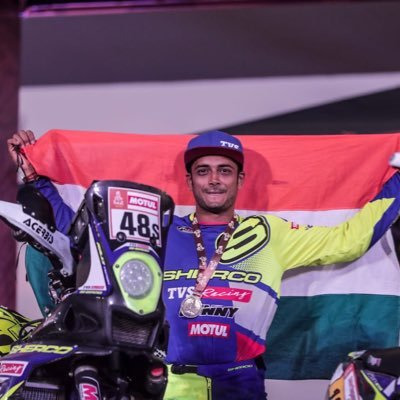

ARAVIND KP ARAVIND KP
ARAVIND KP ARAVIND KP | INFORMATION| PADMA AWARDS | WRITE UP FOR PADMA AWARDS| ACHIEVEMENTS |
 |
ARAVIND K P is an Indian professional international motorcycle racer and rally rider at the National level. He started racing in 2005 at the age of 19, since then he has been proving his capabilities on the bike and track at national and international events. Aravind has won more than 17 National championships in Dirt track, rallies and Motor racing also 1 international trophy too.Aravind victories further span across Dirt track racing, super cross racing, Motor cross racing as well as cross country rallies including the Dakshin Dare and he even tasted victory at the treacherous grueling Raid De Himalaya in 2015. He also won the Sri Lanka Motocross Championship in 2011, becoming the first Indian to win any motor cross event internationally. Aravind has participated in the tough beast DAKAR rally thrice representing India in the year 2017, 2018 and 2019. He conquered 37th position in the Dakar 2019 held at Peru, South America becoming the only Indian to finish the rally that eyar and 2nd Indian overall to finish the rally over the years out of 196 competitors from all across the world in 2 wheeler category. He also has received the best sportsperson of the year (motorsports) award in 2019, awarded by the Sport stars Aces Awards.Here is the list of few rallies conquered by Aravind KP
Impact/outcome/contribution of the work done :
Aravind K P has won more than 17 National Championships and 1 international championship too. He has made India and Indians proud by participating, finishing and winning in most of the international rallies. He held the tri color high at South America by finishing the Dakar rally
1}He has inspired many young generations about how to take motorcycle racing as profession
2}He has shown people to have the never give up attitude by participating and winning in the rallies again which had given him brave injuries
3}The recovery from his injuries took years together but his patience and passion to again get back to sport is the best
4}He has motivated his fellow contestants during their failures
5}His dedication and hard work towards the sports is next level which can be seen through his achievements.
website designed and developed by @aravindkp_myinspiration